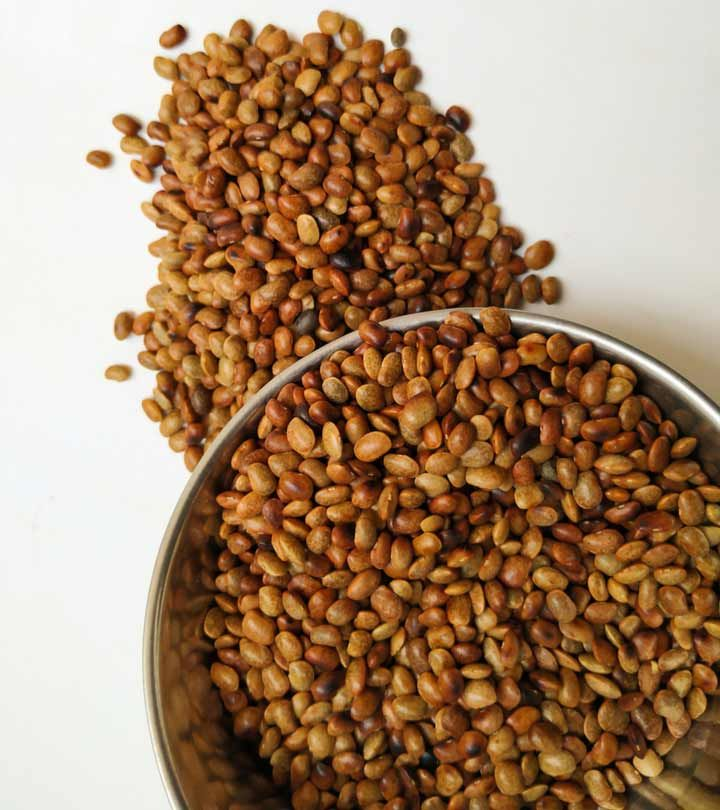

Horsegram Cultivation Guide

1. Land Preparation
- Requires minimum tillage; one or two ploughings are sufficient.
- Suitable for marginal and less fertile soils.
- Apply compost or FYM to improve fertility if possible.
2. Seed Selection & Sowing
- Popular varieties: AK-21, CRHG-1, Paiyur 1.
- Seed rate: 15–20 kg per acre.
- Spacing: 30 cm × 10 cm for line sowing.
- Seed treatment with Rhizobium culture improves nodulation and yield.
3. Water Management
- Grown mostly as a rainfed crop; requires minimal irrigation.
- One irrigation at flowering stage can help boost yields if rainfall is inadequate.
4. Fertilization Schedule
- Apply 10–15 kg Nitrogen and 20–30 kg Phosphorus per acre at sowing.
- No top dressing needed for short-duration varieties.
5. Weed & Pest Management
- First weeding at 15–20 days after sowing.
- Horsegram is resistant to most pests and diseases, but aphids and powdery mildew may appear.
- Neem-based sprays or sulfur dusting can be used if needed.
6. Investment Breakdown (Per Acre)
| Input |
Estimated Cost (INR) |
| Seeds |
₹600 – ₹800 |
| Fertilizers |
₹700 – ₹1,000 |
| Pesticides |
₹300 – ₹500 |
| Labor |
₹2,500 – ₹4,000 |
| Irrigation (if needed) |
₹500 – ₹800 |
| Total Investment |
₹4,600 – ₹7,100 per acre |
7. Harvesting & Yield
- Harvest when pods are dry and turn brown.
- Expected yield: 3–5 quintals per acre.
8. Market Rate & Profit Estimation
- Market price: ₹4,000 – ₹6,000 per quintal.
- Gross returns: ₹12,000 – ₹30,000 per acre.
- Net profit: ₹5,000 – ₹23,000 per acre.